Swat District (ضلع سوات), also known as the Swat Valley, is a district in the Malakand Division of Khyber Pakhtunkhwa, Pakistan. Known for its stunning natural beauty. It is a natural geographic region surrounding the Swat River. The valley was a major centre of early Buddhism of the ancient civilisation of Gandhara, mainly Gandharan Buddhism, with pockets of Buddhism persisting in the valley until the 16th century conquest of Swat by the Yousafzais, after which the area became largely Muslim, along with the Pashtunization of Swat and its neighbouring regions.
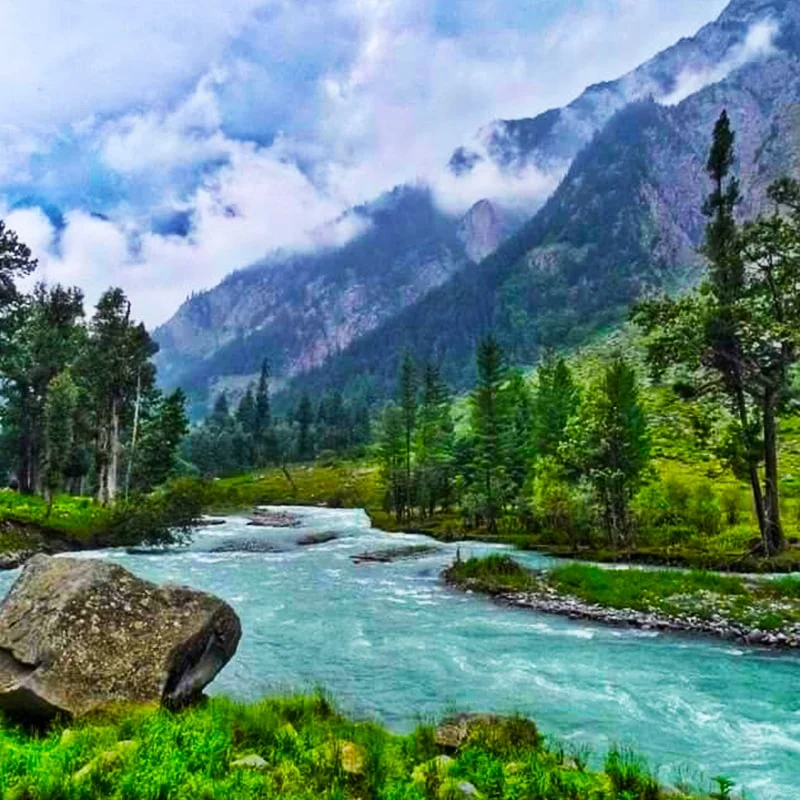
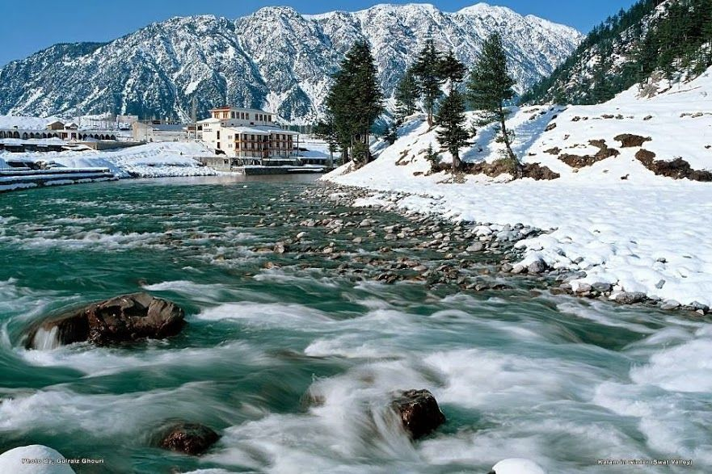
 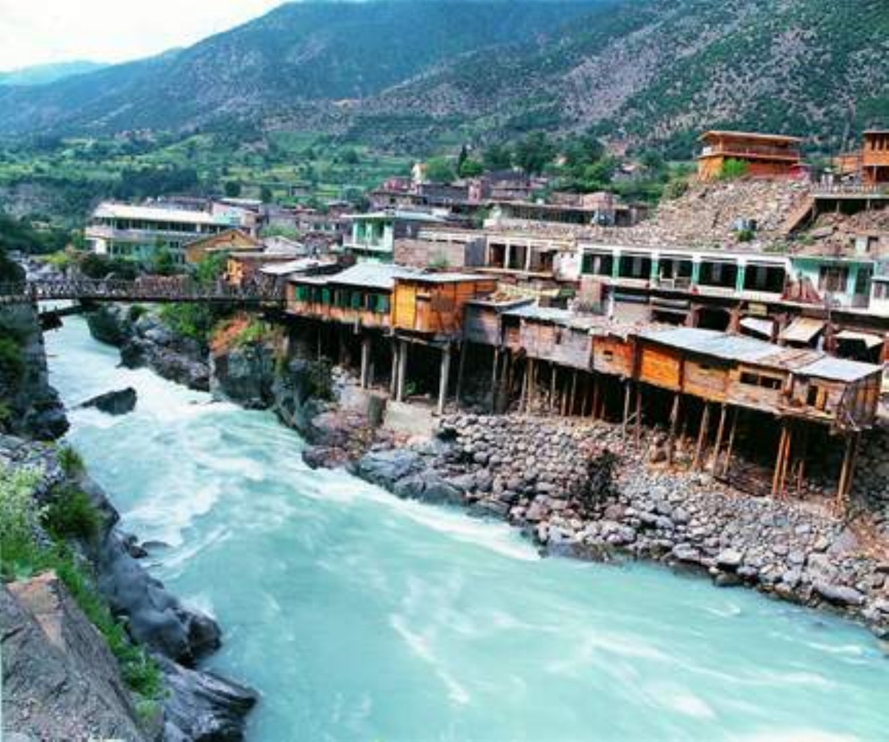
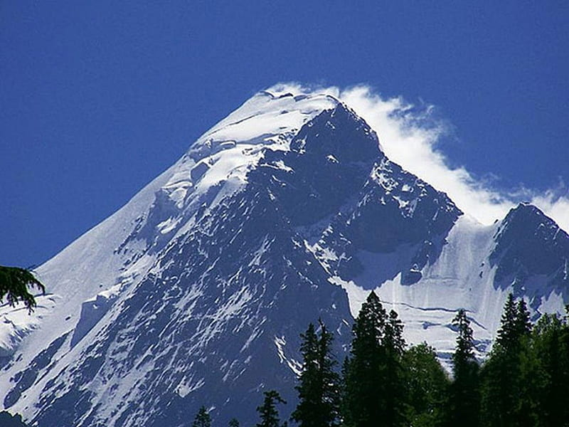
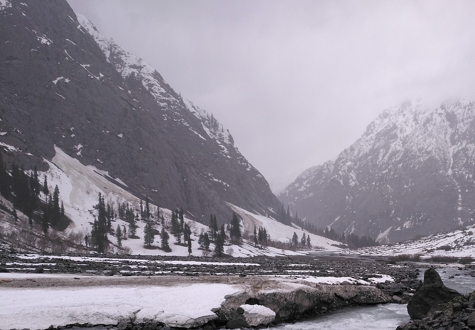
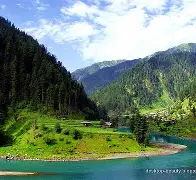
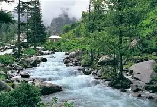
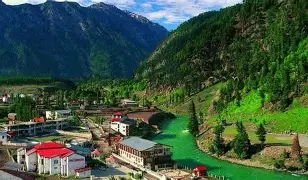
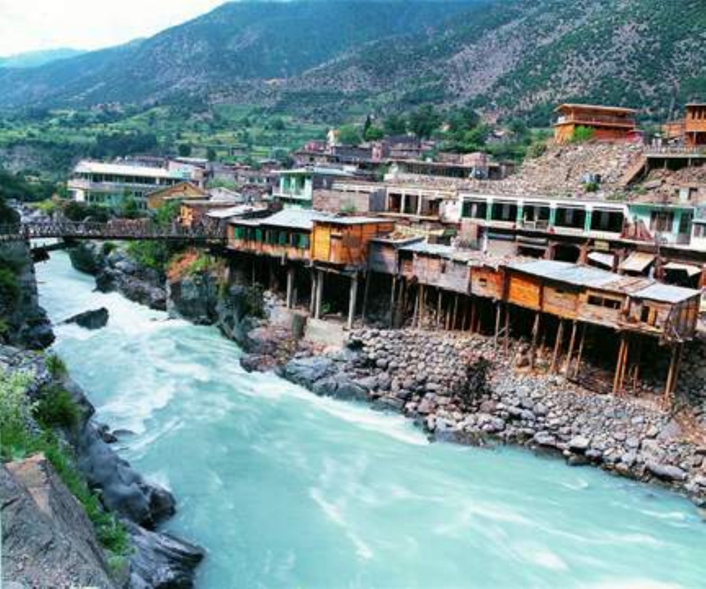
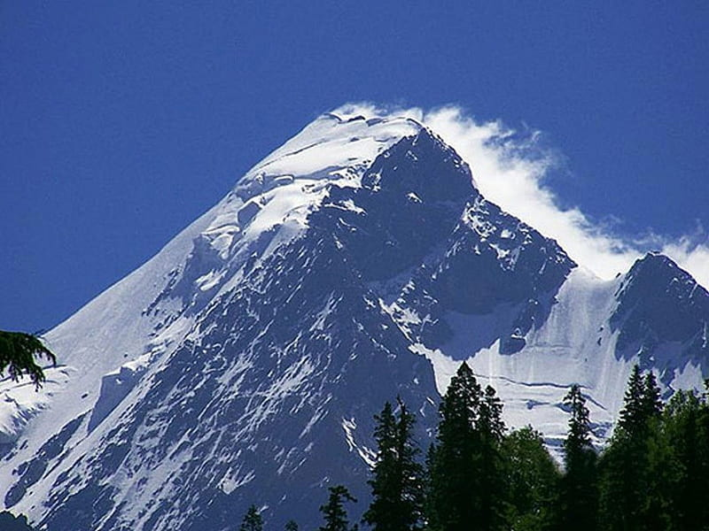
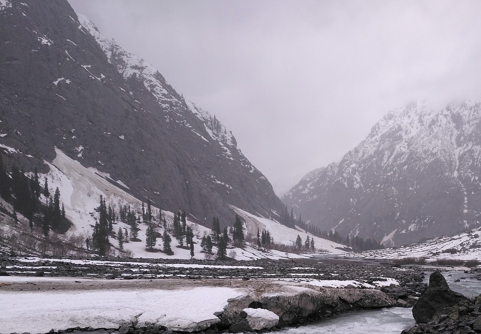
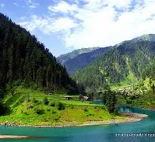
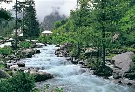
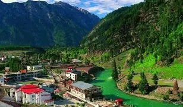
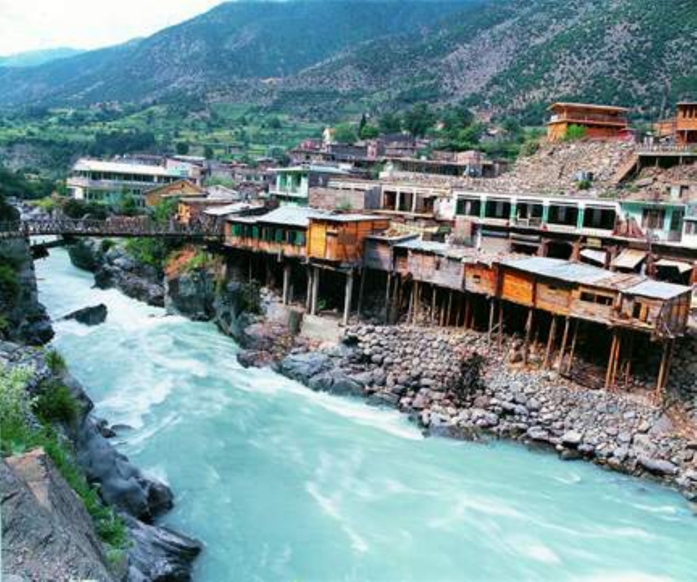
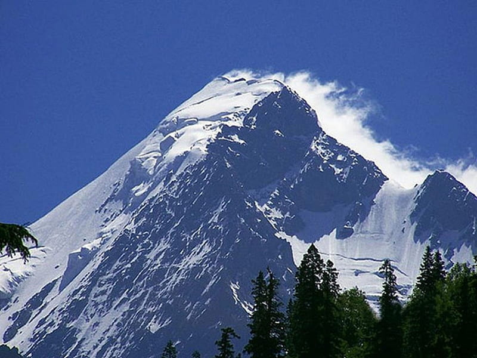
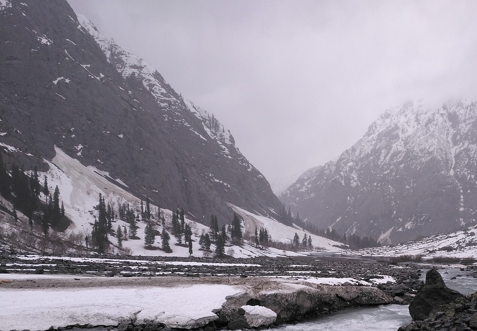
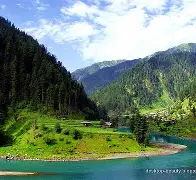
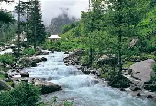
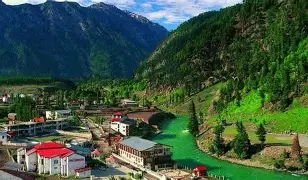